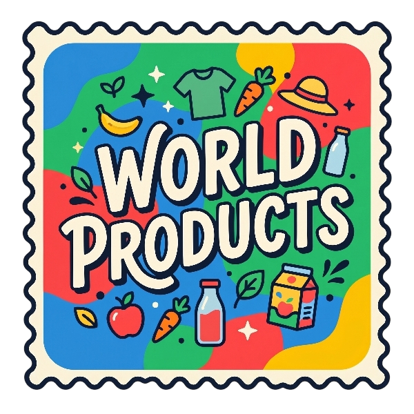
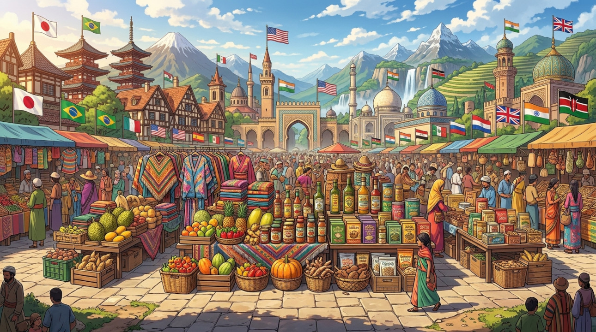

Embark on a digital journey across continents with an NFT collection dedicated to the rich tapestry of global cultures. Each token serves as a miniature window into a specific nation, proudly displaying its national flag alongside the distinct natural environments that define the region. From lush tropical coastlines to bustling mountain villages, every background sets an authentic stage for international discovery.
At the heart of each piece is a curated arrangement of everyday items that capture the true flavor of local life. Collectors will find vibrant assortments of regional fruits and vegetables, traditional garments, artisanal bottles, and intricately designed small food boxes. These familiar objects tell a story of daily traditions, local craftsmanship, and culinary heritage.
Designed for art lovers and global explorers alike, this collection turns national identity into collectible digital art. Whether you are representing your homeland or building a borderless gallery, each piece offers a unique celebration of the world around us.